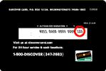

Что такое код CVV?
CVV - Номер проверки кредитной карты. Кредитные карты Visa, MasterCard, American Express и Discover используют номер проверки для уменьшения риска в случае совершения сделок в отсутствие кредитной карточки (таких, как операции через Интернет или заказ по почте). Код проверки – это свидетельство того, что при совершении операции карточка находится физически у лица, делающего заказ.
Номер проверки состоит из трёх- или четырехзначного кода, отпечатанного на оборотной стороне карт Visa, MasterCard и Discover или выгравированного на лицевой стороне карты American Express. Эти кредитные компании используют номер проверки с 1990 г.
Где мне найти CVV??
Visa (трехзначный номер проверки - CVV2)
У этой карточки номер проверки CVV2 состоит из трёх последних цифр, отпечатанных на оборотной стороне карты в окошке для подписи владельца.
MasterCard (трехзначный номер проверки CVC2)
У этой карточки номер проверки состоит из трёх последних цифр, отпечатанных на оборотной стороне карты в окошке для подписи владельца.
Discover (трехзначный номер проверки CID)
У этой карточки номер проверки состоит из трёх последних цифр, отпечатанных на оборотной стороне карты в окошке для подписи владельца.

American Express (четырехзначный номер проверки CID)
Если Вы используете карту American Express, номером проверки является четырёхзначный номер на лицевой стороне Вашей карты, над номером Вашей карты справа.

Что если у меня другая карточка, а одна из указанных выше?
На сегодня, номер проверки поддерживается только Visa, MasterCard, American Express и Discover.